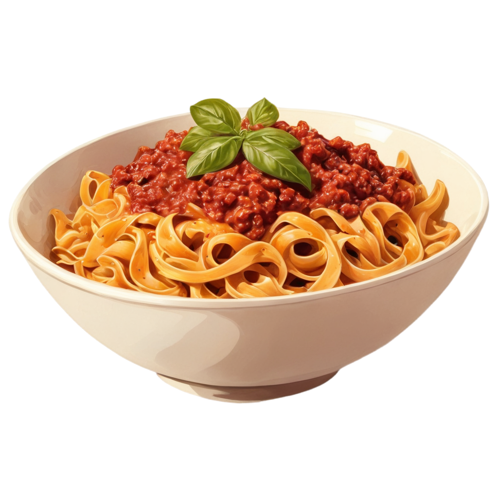

tagliatelle al ragù

Tagliatelle with ragù are simply on another level. A good quality ragù can really change the world
Ingredients
- 250g Tgliatelle all'uovo
- 150g pancetta dolce a dadini
- 500g tritato di manzo
- 200ml vino rosso
- 400ml passata di pomodoro
- 200ml latte
- 1 coste di sedano
- 1 carote
- 1 cipolle
- q.b. olio extravergine d'oliva
- q.b. sale fino
- q.b. pepe
Steps
- Preparare il ragù
- Rosolare (mettere olio o burro in padella >140°) la pancetta da sola in un tegame per qualche minuto
- Aggiungere olio, sedano, cipolla e carota tritate e soffriggere (olio a 120°/140°)
- Quando le verdure si sono appassite unire la carne tritata e rosolare per 5 minuti
- Sfumare col vino rosso e cuocere per altri 5 minuti
- Versare la passata di pomodoro e condire con sale e pepe
- Cuocere il ragù a fiamma bassissima con coperchio per un'ora e mezza
- Aggiungere il latte e mescolare. Cuocere per altri 5-10 minuti
- Il ragù è pronto quando è cremoso ed omogeneo
- Lessare le tagliatelle in acqua salata bollente
- Scolare ed aggiungere le tagliatelle al ragù
- Mescolare e ripassare la pasta
- Impiattare